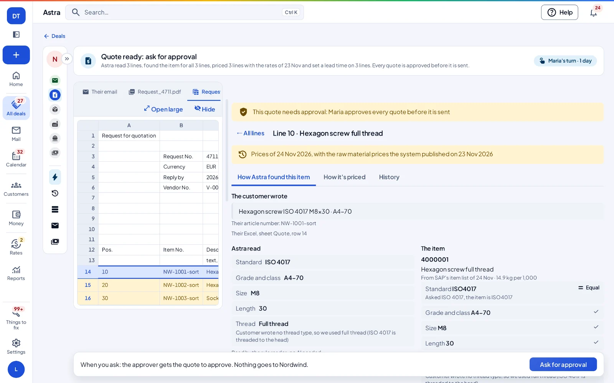
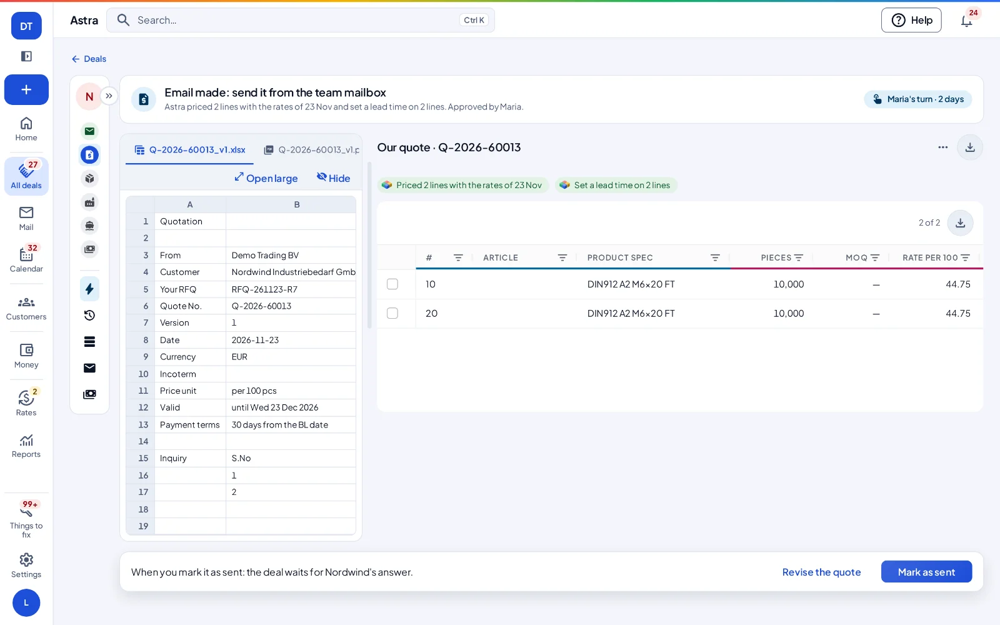
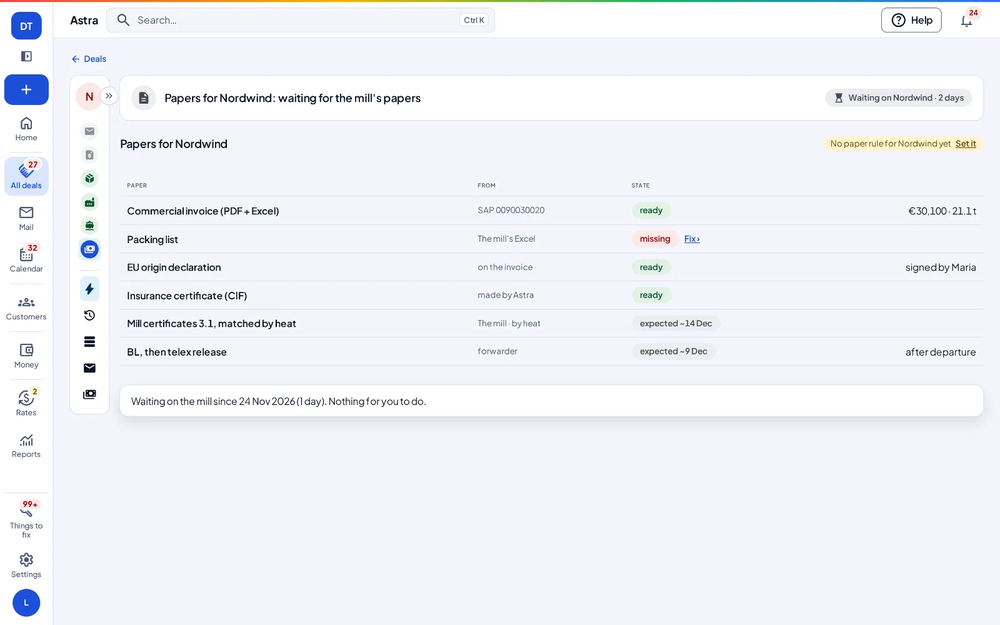
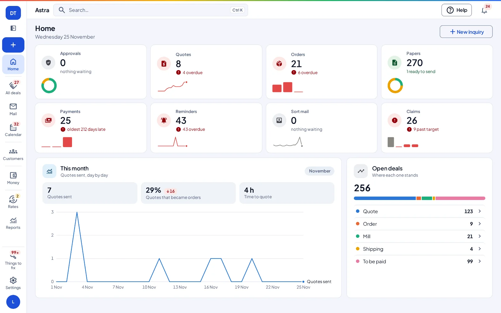

Account managers
Price an inquiry on a laptop, in tables that work like Excel. Only the values that need a look are highlighted.
Astra · for metal and fastener traders
Astra reads your customers' inquiries, finds your own SAP item for every line, prices it from the day's rates and prepares the quote. A person approves it, on a laptop or a phone, before anything goes out.
Who it's for
Fasteners, bars, wire and other long products: you buy from mills, sell to industry, and keep SAP as your ledger. Your inquiries arrive in every format, and every line has to become your own item, at today's price.
Price an inquiry on a laptop, in tables that work like Excel. Only the values that need a look are highlighted.
Approve quotes, credit notes and reminders on a phone, with the reason in one line.
Orders to the mill, its confirmation checked against the quote, and the files SAP needs.
Invoices, packing lists, certificates, payments and claims on the same deal, without retyping.
How a quote is made
Forward the customer's mail to your team address. Astra reads the mail and its attachments: PDF (scans too), Excel, CSV and Word, in the customer's own language. Each line keeps a link to the place it came from.
For every line, Astra reads the standard, grade, size, length and thread, and matches them to your own item list. "How Astra found this item" shows what the customer wrote, what Astra read and why this item fits.
Rate per 100 or per 1000, with your discounts, freight, delivery terms and margins. Values Astra is unsure of are highlighted, so you check those and not the rest.

Quotes below the usual margin, or above a customer's credit limit, go to a manager. The phone shows what is unusual, the account manager's reason and the customer's history. Approve or send back, with a note.
Astra prepares the quote as Excel and PDF in your layout, and the email in the customer's language. It goes from your team mailbox with the account manager in Cc, only when a person presses Send.

After the customer says yes
Every inquiry becomes a deal that keeps its mails, files and lines together. Astra checks the customer's order against the quote, prepares the order to the mill, compares the mill's confirmation line by line, and builds the shipping papers: invoice, packing list, origin declaration, insurance, certificates matched by heat.
Payments are matched to invoices, reminders are prepared for approval, and a claim starts from the deal it belongs to. Each deal shows whose turn it is, and since when.

Made for people who live in Excel

Works beside your systems
Astra reads the lists SAP exports and prepares the files SAP loads. No integration project, and nothing in SAP changes.
Mail comes in and goes out through your team mailbox, with the person in Cc. Your people sign in with their company accounts.
On AWS in Frankfurt. Your data stays yours, can be exported any time and is never used to train public AI models.
Margins, approval limits, credit limits, quote layouts and who sees what are set by your managers.
No. Astra reads the lists SAP already exports (items, orders, invoices, open items) and prepares the files SAP loads. SAP stays your ledger.
Yes. Astra reads mail bodies, PDFs including scans, Excel, CSV and Word, in the customer's language. When it is not sure of a value, it highlights it for a person instead of guessing quietly.
A person. Astra prepares the quote and the email; a manager approves where your rules say so; it goes out from your team mailbox only when someone presses Send.
In the EU, on AWS in Frankfurt, encrypted. You can export it at any time, and it is never used to train public AI models.
With a pilot on your own work: we load your item list, rates and quote layout, and Astra runs beside your team for a few weeks on live inquiries, measured against targets we agree first.
In 30 minutes we show the whole flow, from the customer's mail to the paid invoice.
Book a demoThe screenshots on this page show made-up demo data.